Goal
To learn how to achieve these:
- Handling quotes and variable expansion
- Tokenization & Lexing
- How does built-ins work (cd, export, unset)
- Environment table management
- Persistent interactive shell loop
- Constantly update & maintain internal state (env, pwd, oldpwd, home, etc)
The rest has been covered by earlier milestones and projects
Dynamic Shell Prompt
A dynamic prompt was used instead of something like "minishell: <input>" for closer replication of Bash.
It uses the USER, HOSTNAME, HOME and CWD environment variables, with fallbacks if any of them are invalid.
Instructions
You can compile this project using the Makefile provided by executing make on the TTY or CLI.
Project Showcase
-
Environment variables ($ followed by a sequence of characters)
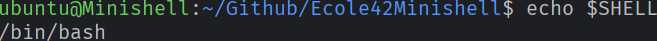
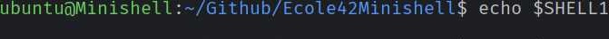
-
$? - which should expand to the exit status of the most recently executed foreground pipeline.
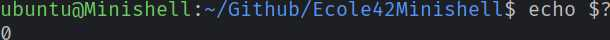
-
Signals: (ctrl-C, ctrl-D, ctrl-\)
In interactive mode:
- ctrl-C displays a new prompt on a new line.
- ctrl-D exits the shell.
- ctrl-\ does nothing.
- ctrl-C displays a new prompt on a new line.
Built-in commands
- echo with option -n
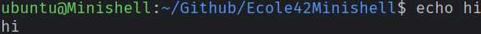
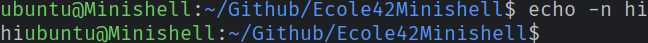
- cd with only a relative or absolute path
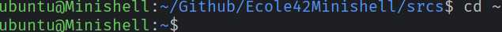
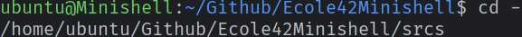
- pwd with no options
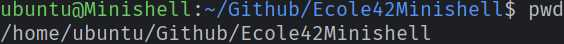
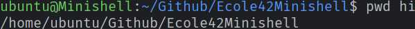
- export with no options
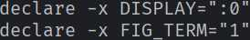
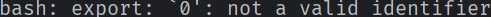
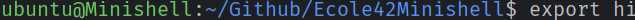
- unset with no options
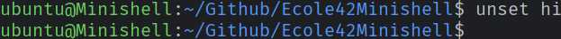
- env with no options or arguments
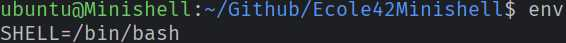
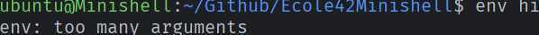
- exit with no options
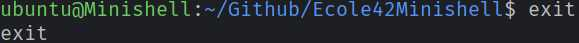
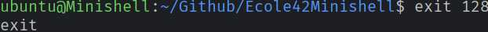
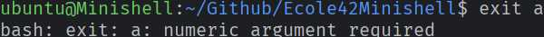
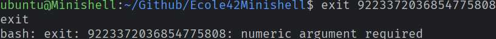


- echo with option -n
Resources
AI was used to have utmost precision in closely replicating Bash, from error messages and formats to exactly what algorithm was used behind the hood.
For example, Bash's default sorting algorithm.